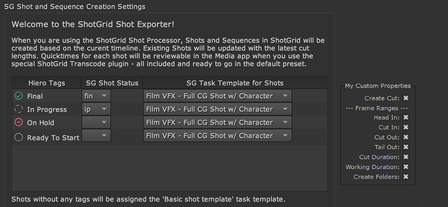

This class defines methods that handle updating the Shot entity
in Shotgun, as well as whether and how the filesystem structure
is created for a Shot during export.
Handles creating the filesystem structure for the shot that
was exported. The preset properties dictionary is provided to
allow for the lookup of any custom properties that might have
been defined in other hooks, like can be achieved when using
the hiero_customize_export_ui hook.
Example Implementation:
# Check our custom property to know whether we should create the filesystem# structure or not.ifpreset_properties.get("custom_create_filesystem_property",True):self.parent.logger.debug("Creating file system structure for %s%s..."%(entity_type,entity_id))self.parent.sgtk.create_filesystem_structure(entity_type,[entity_id])else:self.parent.logger.debug("Not creating the filesystem structure!")
Parameters:
entity_type (str) – The entity type that was created or
updated as part of the export. Most likely this will be
“Shot”.
entity_id (int) – The id of the entity that was created
or updated as part of the export.
preset_properties (dict) – The export preset’s properties
dictionary.
Handles updating the Shot entity in Shotgun with the new data produced
during the export. The preset properties dictionary is provided to
allow for the lookup of any custom properties that might have been
defined in other hooks, like can be achieved when using the
hiero_customize_export_ui hook.
Example Implementation:
# If the custom bool property is False, we don't update the# sg_cut_in field on the Shot entity.ifnotpreset_properties.get("custom_update_cut_in_property",True):delentity_data["sg_cut_in"]self.parent.sgtk.shotgun.update(entity_type,entity_id,entity_data)
Determines whether to process the associated Cut entity during
export. The preset properties provided allow for customization
of this behavior based on custom properties added to the shot
processor preset via other hooks, such as the
customize_export_ui hook.
Example Implementation:
# The my_custom_property is a bool property that controls# whether we update cuts or not.returnpreset_properties.get("my_custom_property",True)
Parameters:
preset_properties (dict) – The properties dictionary of
shot processor preset.
Handles the creation of the CutItem entity in Shotgun. This
hook method can be overridden in order to put conditions on
whether or how this creation occurs. The preset’s properties
are provided to allow for looking up custom properties that
might have been added to the preset in other hooks, like can
be achieved when using the hiero_customize_export_ui hook.
Parameters:
cut_item_data (dict) – The dictionary of field/value
pairs to use when creating the CutItem entity in Shotgun.
preset_properties (dict) – The export preset’s properties
dictionary.
Returns:
The created CutItem entity dictionary, or None if
no CutItem entity was created.
Gets the path to a thumbnail image to use when updating the
export’s associated Cut’s thumbnail image. If None is returned
by this method, the Cut’s thumbnail will not be updated.
Parameters:
cut (dict) – The Cut entity dictionary associated with the
export.
task_item – The TrackItem object associated with the export
task. Hiero API docs are available here.
preset_properties (dict) – The export preset’s properties
dictionary.
Returns:
The path to the thumbnail image, or None if no thumbnail
is to be uploaded to Shotgun.
This class defines a hook that can be used to gather additional data
and add it to the data dictionary that’s used to register any new
PublishedFile entities in Shotgun during the given Task’s execution.
This class implements a hook that can be used to add custom logic to
be run after a Version entity is created in Shotgun as part of the
export process.
Runs following the creation of the Version entity in Shotgun. The
provided version data is the data structure containing information
about the Version entity, including its ID in Shotgun.
The default implementation of the custom resolver simply looks up
the keyword from the Shotgun Shot entity dictionary. For example,
to pull the shot code, you would simply specify ‘code’. To pull
the sequence code you would use ‘sg_sequence.Sequence.code’.
Parameters:
task – The export task being processed. Hiero API docs are
available here.
keyword (str) – The keyword token that needs to be resolved.
Returns:
The resolved keyword value to be replaced into the
associated string.
Takes a Toolkit template object as input and returns a string
representation which is suitable for Hiero exports. The Hiero export
templates contain tokens, such as {shot} or {clip}, which are replaced
by the exporter. This hook should convert a template object with its
special custom fields into such a string. Depending on your template
setup, you may have to do different steps here in order to fully
convert your template. The path returned will be validated to check
that no leftover template fields are present, and that the returned
path is fully understood by Hiero.
Parameters:
template – The Toolkit template object to be translated.
output_type (str) – The output type associated with the template.
Updates the version_data dictionary to change the data for the Version
that will be created in Shotgun. Updating the given version_data
dictionary in place will ensure your customizations are used when
creating the new Version entity.
Parameters:
version_data (dict) – The data dictionary that will be used by
the export process to create a new Version entity in Shotgun.
task – The Hiero export task being processed. Hiero API docs
can be found here.
This class defines methods that can be used to customize the UI of the various
Shotgun-related exporters. Each processor has its own set of create/get/set
methods, allowing for customizable UI elements for each type of export.
Example properties embedded into a custom QGroupBox:

Creating custom UI elements for the Hiero export app involves three steps:
Creating a widget
Defining custom properties to add to the associated preset
Setting the widget up to display controls for the custom properties
Builds and returns a custom widget to be embedded in the parent exporter.
If a custom widget is returned by this method, it will be added to the
parent exporter’s layout.
Gets a list of property dictionaries describing the custom properties
required by the custom widget. This method will only be run if the
associated create widget hook method returns a widget. The dictionaries
will be turned into property widgets by the app before being passed to
the associated set properties hook method. The order that the dictionaries
are returned by this method is maintained when they are passed to the
associated set hook method.
Example Implementation:
return[dict(label="Create Cut:",name="custom_create_cut_bool_property",value=True,tooltip="Create a Cut and CutItems in Flow Production Tracking...",),dict(label="Head In:",name="custom_head_in_bool_property",value=True,tooltip="Update 'sg_head_in' on the Shot entity.",),]
Sets any custom properties described by get_shot_processor_ui_properties
on the custom widget returned by create_shot_processor_widget. This method
will only be called if the create method is implemented to return a custom
widget. The order of the properties within the dictionary passed in is the
same as the order they’re returned in the get properties hook method.
widget – The Qt widget that was created by the associated create
widget hook method.
properties (OrderedDict) – A dict containing property widget
objects, keyed by label, that were constructed from the data
built by the associated get properties hook method.
Builds and returns a custom widget to be embedded in the parent exporter.
If a custom widget is returned by this method, it will be added to the
parent exporter’s layout.
Gets a list of property dictionaries describing the custom properties
required by the custom widget. This method will only be run if the
associated create widget hook method returns a widget. The dictionaries
will be turned into property widgets by the app before being passed to
the associated set properties hook method. The order that the dictionaries
are returned by this method is maintained when they are passed to the
associated set hook method.
Sets any custom properties described by get_transcode_exporter_ui_properties
on the custom widget returned by create_transcode_exporter_widget. This method
will only be called if the create method is implemented to return a custom
widget. The order of the properties within the dictionary passed in is the
same as the order they’re returned in the get properties hook method.
widget – The Qt widget that was created by the associated create
widget hook method.
properties (OrderedDict) – A dict containing property widget
objects, keyed by label, that were constructed from the data
built by the associated get properties hook method.
Builds and returns a custom widget to be embedded in the parent exporter.
If a custom widget is returned by this method, it will be added to the
parent exporter’s layout.
Gets a list of property dictionaries describing the custom properties
required by the custom widget. This method will only be run if the
associated create widget hook method returns a widget. The dictionaries
will be turned into property widgets by the app before being passed to
the associated set properties hook method. The order that the dictionaries
are returned by this method is maintained when they are passed to the
associated set hook method.
Sets any custom properties described by get_audio_exporter_ui_properties
on the custom widget returned by create_audio_exporter_widget. This method
will only be called if the create method is implemented to return a custom
widget. The order of the properties within the dictionary passed in is the
same as the order they’re returned in the get properties hook method.
widget – The Qt widget that was created by the associated create
widget hook method.
properties (OrderedDict) – A dict containing property widget
objects, keyed by label, that were constructed from the data
built by the associated get properties hook method.
Builds and returns a custom widget to be embedded in the parent exporter.
If a custom widget is returned by this method, it will be added to the
parent exporter’s layout.
Gets a list of property dictionaries describing the custom properties
required by the custom widget. This method will only be run if the
associated create widget hook method returns a widget. The dictionaries
will be turned into property widgets by the app before being passed to
the associated set properties hook method. The order that the dictionaries
are returned by this method is maintained when they are passed to the
associated set hook method.
Sets any custom properties described by get_nuke_shot_exporter_ui_properties
on the custom widget returned by create_nuke_shot_exporter_widget. This method
will only be called if the create method is implemented to return a custom
widget. The order of the properties within the dictionary passed in is the
same as the order they’re returned in the get properties hook method.
widget – The Qt widget that was created by the associated create
widget hook method.
properties (OrderedDict) – A dict containing property widget
objects, keyed by label, that were constructed from the data
built by the associated get properties hook method.